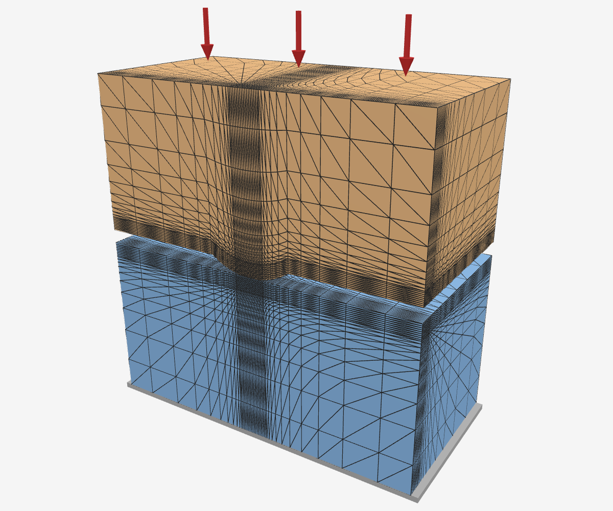
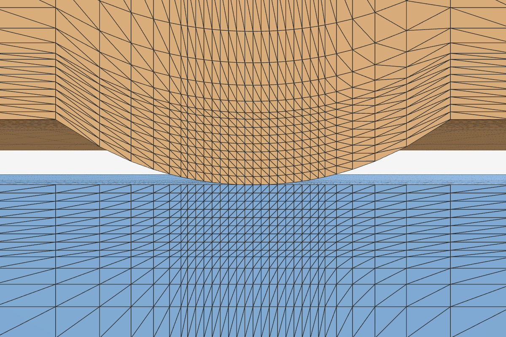
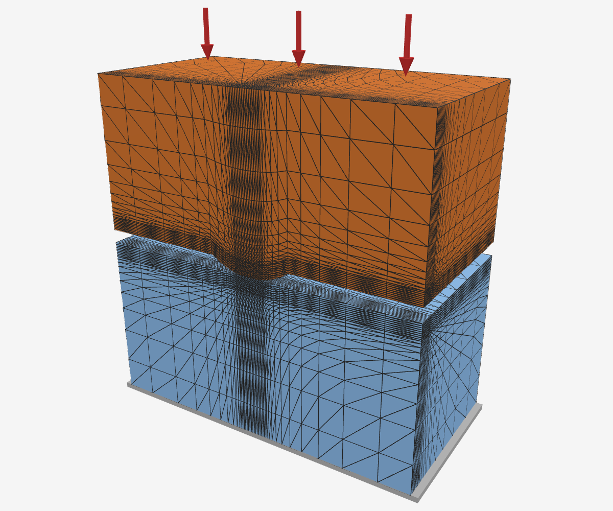
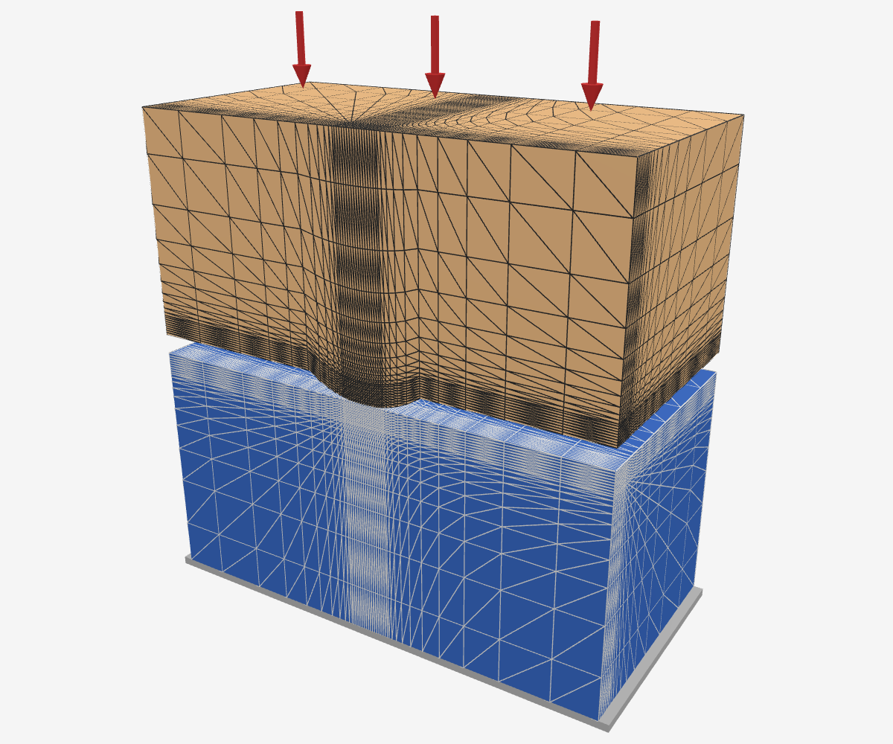
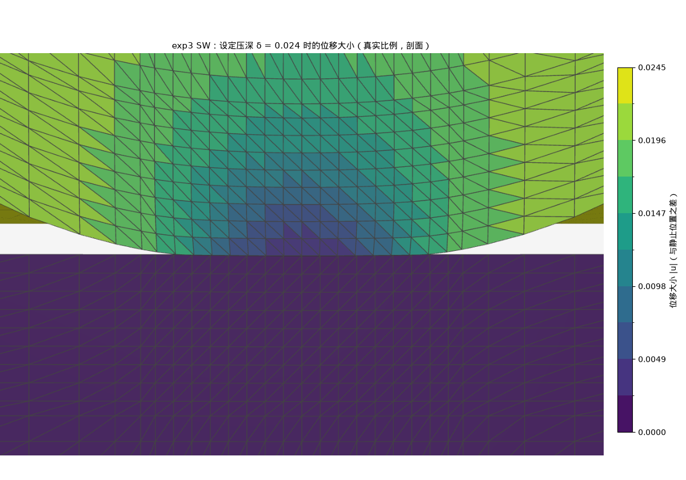
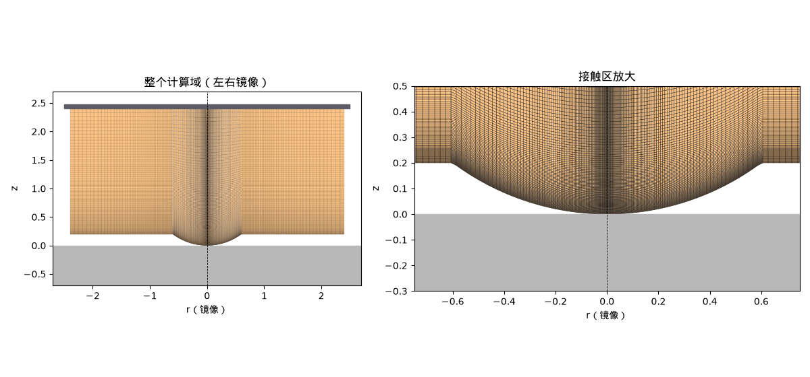
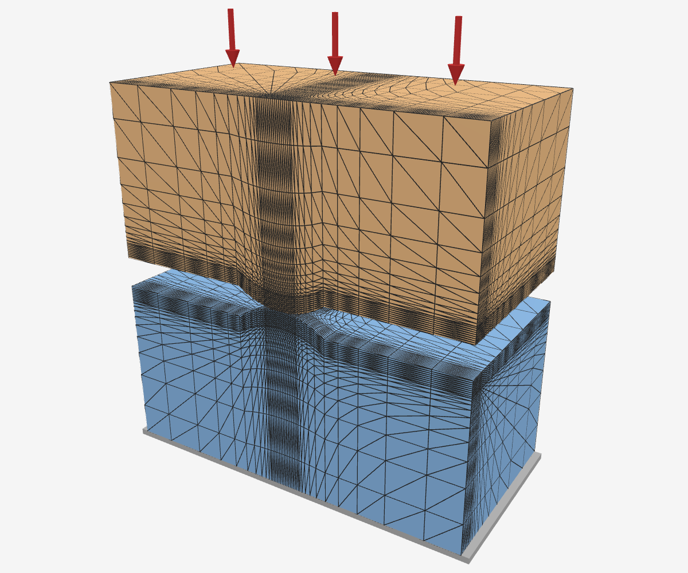
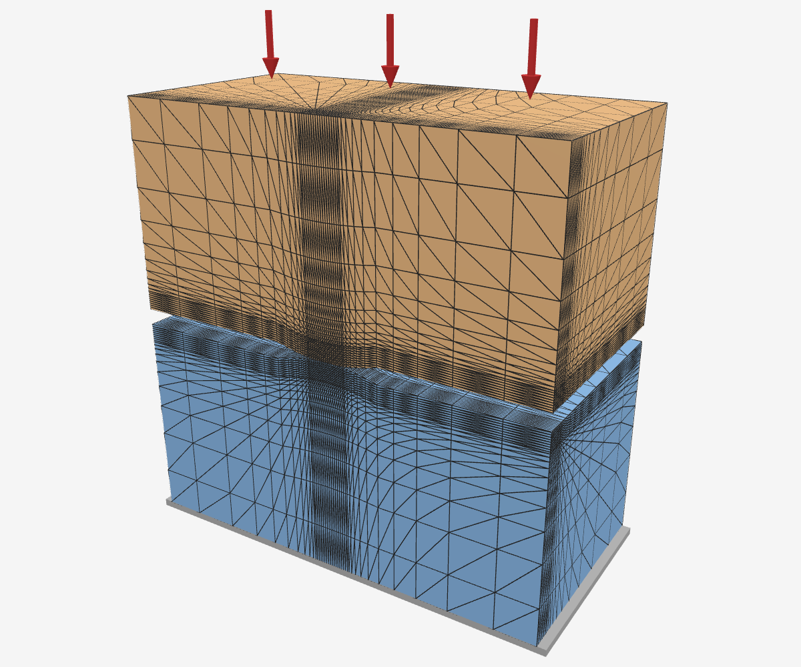

- 要解决的问题：精细仿真（IPC 接触 + 精细有限元）准确但慢；粗模型（刚体、仿射体）快，但没有接触处的局部变形。神经网络学一项碰撞能量 \(U_c\) 补上这部分弹性能
- 标签：用 IPC + 精细有限元对每个构型算出的 \(U_c\)，是网络的训练目标
- hydro（hydroelastic 接触）：对比方法。每个物体内预设一个随深度增长的压力场，接触力由两物体重叠区内的压力算出；Genesis 是实现了它的开源物理仿真器
- 裁判：独立于标签和 hydro 的弹性解：Hertz、Boussinesq 解析式，两凸台用边界元数值解，薄层用高精度数值解，另有独立的轴对称有限元
- 本周：标签扩展到两个软体并与弹性解对照；hydro 在自身定义下做到最强（hydro++）；软–软网络架构；后续对比候选
本页结论：软压头压刚面时，标签与独立有限元裁判相差不超过 0.15 个百分点；hydro++ 仍有「软度按物体相加」「多接触区不交互」两条本质问题；软–软网络以「缝隙 + 合成模量」为骨架。
标签代码：两个软体
- 压头与被压块现在都可以是有限元软体：此前压头只能是刚体，软–软接触无法生成标签
- 压头取「球冠头厚块」：厚块底面削成半径 \(R\) 的球冠，顶面整体下推；Hertz 要求两侧都近似无限大，厚块可与被压块一起加大、外推
- 软–软时须收紧求解器的收敛条件：默认设置下每帧的牛顿迭代过早终止，同一配置两次运行在最小压深处的能量分别为 Hertz 的 1.68 倍与 1.85 倍；收紧后得到唯一平衡解，计算时间增加约 13%，本页所有标签均采用收紧后的设置
设置：两物体均为四面体网格，接触处加密、向外逐层变粗；块底面固定；压头顶面按位移驱动下压。

软球冠头厚块（浅橙）压软块（浅蓝）；剖开一半显示网格，红箭头为下压方向，底部灰板表示固定

接触区放大：两侧接触处网格加密
标签代码已覆盖软–软接触；两个软体时牛顿迭代须收紧到真正收敛，否则标签不可复现。
软压头压软块：标签与 Hertz、独立有限元裁判
设置：压头 / 块的杨氏模量四组——几乎刚的压头（1e8 / 1e5）、硬 10 倍的压头（1e6 / 1e5）、两侧等软（1e5 / 1e5）、硬度对调（1e5 / 1e6）；ν 均为 0.3；R = 1，压深 0.006–0.024（最小压深 0.004 网格外推不成立，剔除）。每个值先外推到理想情形：IPC 在两表面间保留的间隙厚度 → 0、块 → 无限大、网格 → 无限细。
| 压头 / 块 |
标签 ÷ Hertz |
| 几乎刚的压头 |
0.996–1.007 |
| 硬 10 倍的压头 |
0.993–1.004 |
| 两侧等软 |
0.980–0.990 |
| 硬度对调（软压头压硬块） |
0.970–0.977 |

硬压头（深橙）压软块（浅蓝）

硬度对调：软压头（浅橙）压硬块（深蓝），几何与加载不变

硬度对调、压深 0.024 时的位移大小（真实比例，剖面）：软压头被压平，硬块几乎不动
- 偏低量 ≈ \(s\cdot k\)
- \(s\) 为压头承担的柔度份额，压头越软 \(s\) 越大（硬 10 倍 0.09，等软 0.5，对调 0.91）
- \(k\) 在三组中近似相同，由接触圈半径 \(a\) 与球冠半径 \(R\) 之比决定，\(k\approx0.27\,a/R\)
- 软压头压刚性地面同样出现；球冠半径加倍时只看 \(a/R\)（差 ≤ 0.11%），与网格分辨率无关
- 软压头压刚面上，独立裁判确认标签正确：轴对称有限元与标签逐压深相差不超过 0.15 个百分点
- 轴对称有限元只算过轴的一个截面，转一周即三维；直接解静力平衡，无接触间隙，与标签只共用几何与材料公式
- 软–软没有独立裁判，由上面的 \(s\cdot k\) 规律间接支持
- 偏低是该几何的真解：软球冠压刚面（块外推到无限大）比 Hertz 低 1.6% → 3.6%，刚球压平块只差 0.2% 以内
- 约 62%–74% 来自有限变形：同一几何换成线弹性材料，裁判给出 0.994 → 0.988
设置：裁判与标签用同一球冠头几何与同一材料公式；与标签的比较量为「软球冠压刚面 ÷ 刚球压同尺寸软平块」，两边同法相除，以消去有限块尺寸的影响；1.6% → 3.6% 为软球冠压刚面单独外推到无限大块的值（刚球压平块 ≈ 1，按比值外推为 1.7% → 3.6%，几乎相同）。

独立裁判的计算域：轴对称网格，软球冠头压刚性平面（左为整体，右为接触区放大；关于轴镜像显示）
已定：软压头标签的验收判据为先除以近刚压头结果、再对 \(a/R\) 外推到 0，截距与 1 相差 ≤ 1%。
软压头压刚面时，标签与独立有限元裁判相差不超过 0.15 个百分点，此时两体 Hertz 高估能量 1.6%–3.6%；软–软时偏低 ≈ s·k，k 由 a/R 决定，主体来自有限变形。
两个相同软球同时放大一倍
- Hertz：同一压深下能量变为 √2 ≈ 1.414 倍
- 两球对压等价于一个等效球压平面，等效半径 \(R^*=R/2\)；能量正比于 \(\sqrt{R^*}\)
- 按 hydro 的公式只能是 1 倍或 2 倍：力 = 压力梯度 × 重叠体积，球放大一倍重叠体积 ×2；场按球半径归一时梯度减半 → 1 倍，按物体厚度归一 → 2 倍
- 标签：能量比 1.411–1.438，6 个压深都在 √2 的 2% 以内（依赖收敛阶假设）；两物体各承担一半能量，偏差 ≤ 0.0015
- 更多形状的标签对解析解：平底 a = 0.25、0.5、1 时标签 ÷ Boussinesq 都在 1.001–1.005（收敛阶约 1，源于平底边缘应力奇异）；不粘结薄层 1.002–1.007；倾斜到只剩一个凸台接触时两凸台与单凸台能量应相等，相差 4a ≤ 0.2%、10a ≤ 0.7%
- 圆锥与幂律压头：标签的压深幂次 2.975 / 2.652 / 2.260，解析 3 / 2.667 / 2.25
- 标签 ÷ 解析（三档网格，实测收敛阶 1.6–1.95）：圆锥 1.004–1.011，k = 1.5 为 0.994–1.006；原先两档、假定收敛阶 1 只得 0.941–0.984 / 0.916–0.990，偏低是阶数假定错了
- 按球调好的 hydro ÷ 解析（三个压深）：圆锥 0.904 / 1.107 / 1.265，k = 1.5 为 0.654 / 0.725 / 1.024，k = 4 为 1.683 / 1.422 / 1.577，最大误差 26% / 35% / 68%
- 最大平底（a = 1）坏点已修好：取能量前先确认停稳：连续 3 帧压头位移 ÷ 压深 < 3e-5、能量相对变化 < 1e-4 才取，最多等 60 帧
- 重跑后 13 个结果全部停稳，实际保持 13–42 帧；同参数两遍相差 ≤ 4.5e-5，原先固定保持 12 帧时为 0.4%–2.5%
- a = 1 外推 1.002–1.005；a = 1 与 a = 0.25 的能量比 4.002–4.006，解析值 4
设置：两个相同的球冠头厚块顶对顶对压，E = 1e5、ν = 0.3；比较 R = 1 与 R = 2，其余条件全同；压深 0.004–0.024 共 6 档。网格外推的收敛阶取假定值 0.8–2，结论不变；按三档网格实测收敛阶时只有 3 个压深可用，其中 0.024 为 √2 的 1.021 倍。最小压深 0.004 在这里保留：假定收敛阶时只用粗、中两档网格，不用在该压深分辨不了接触圈的特粗档。

R = 1：两个软球冠头厚块顶对顶，上块下压、下块底面固定

R = 2：同一设置，球冠半径加倍
两软球同时放大一倍，标签能量变为 1.41–1.44 倍，与 Hertz 的 √2 一致；hydro 的公式只能给出 1 倍或 2 倍。
Genesis 中 hydro 的四种刚软组合
- hydro 的压力场：每个物体内部预设 \(p=\dfrac{E_h}{D}\times\)（离表面的深度）
- \(E_h\) 为人工设定的压力场模量，与材料杨氏模量无关；\(D\) 为物体内离表面最远的距离；\(E_h/D\) 即压力梯度
- 两物体重叠时，接触面取两侧压强相等处（等压面）；原版 hydro 中两侧梯度像两根弹簧串联，较软的一侧主导
- 软–软：两侧压力场模量各改 10 倍，压深不变
- 原版串联公式预言两侧同时增大 10 倍时压深缩为 0.316 倍；Genesis 实测为 0.9999 倍，四种组合压深在 1.784–1.787 mm
- 原因：Genesis 软–软的接触力 = 全局参数 \(H\) × 重叠体积，\(E_h\) 在力中约去，只决定等压面落在哪个物体内（落在球内的份额随之从 0.10 变到 0.91）
设置：两个有限元物体，球（R = 0.1 m、1 kg）靠自重静置在底面固定的块（0.3 × 0.3 × 0.2 m）上，量球陷入块的深度；杨氏模量取 1e8 Pa，弹性变形可忽略，量到的即 hydro 自身的压深；球与块各取 \(E_h\) = 1e5 或 1e6 Pa 四种组合，同一网格（球面细分 5 级）。
软–软，两侧 E_h = 1e5
两侧 E_h 均改为 1e6：压深不变
- 刚–软 ⇄ 软–刚：对调哪一侧是软的，结果改变；Hertz 对两物体对称，对调后不变
|
Genesis 实测 |
Hertz |
| 刚球压软块（场在块内）：球半径 0.1 → 0.05，压深变为 |
1.428 倍 |
1.260 倍 |
| 软球压刚性地面（场在球内）：同上 |
1.015 倍 |
1.260 倍 |
| 对调（软球压地面 ÷ 刚球压软块） |
R 0.05：0.696；R 0.1：0.980 |
1 |
- 场在块内：力正比于重叠体积、即正比于球半径，小球陷得更深
- 场在球内：梯度 \(E_h/R\) 随球增大而减小，恰好抵消重叠体积的增大
设置：软的一方杨氏模量 1e7 Pa、\(E_h\) = 1e5 Pa；球 1 kg 靠自重静置；比较球半径 0.05 与 0.1 m。
刚球（R = 0.05 m）压软块
软球（R = 0.05 m）压刚性地面
- 刚–刚：两侧梯度串联，半径依赖仍与 Hertz 不同：球半径从 0.05 增至 0.2 m（4 倍），压深 3.041 → 2.155 mm，比值 1.411；串联公式预言 1.417，Hertz 为 1.587
设置：带压力场的刚球（1 kg）靠自重静置在固定的带场刚体盒（0.3 × 0.3 × 0.2 m）上。
刚–刚：带场刚球（R = 0.05 m）压带场刚体盒
Genesis 中 hydro 在四种刚软组合下都按自身公式给出压深（与公式相差 3% 以内）；其半径依赖与软硬对调的响应均与弹性解不同；这些差异来自模型定义，远大于与公式之间 3% 以内的数值偏差。
hydro++：hydro 在自身定义下做到最强
- hydro++：定义没写死的部分全交给数值优化
- 只保留定义：每个物体一张固连、非负、随深度不减的压力场；\(U=\int_{\text{重叠区}}\min(p_A,p_B)\,dV\)，重叠越深 → 能量越大
- 每个物体（含刚性压头）各学一张场；新物体由「几何 + 材料 → 场」生成器给场
- 压头不带场时，块场换成什么形状，倍数都一样
| 块场（压强随深度 \(s\)） |
球 R = 1.5 / 2 / 3 对 R = 1 |
平底 a = 0.5 / 1 对 a = 0.25 |
| \(\sqrt s\)、\(s\)、\(s^2\)、分段线性 |
1.5 / 2 / 3 |
4 / 16 |
| 弹性解（Hertz ∝ \(\sqrt R\)；Boussinesq ∝ \(a\)） |
1.22 / 1.41 / 1.73 |
2 / 4 |
- 偏差 ≤ 3.3e-16；原因：压头无场时球 \(U=2\pi R\int_0^{\delta}P(v)\,dv\propto R\)（\(P\) 为块场沿深度的积分），平底 \(U=\pi a^2P(\delta)\propto a^2\)
- hydro++ 实际拟合：压头带场时训练与换位置都做到 0
| 拟合（球 R = 1、2，训练 10 个构型） |
训练最大误差 |
换位置最大误差 |
| 压头带场 |
2.2e-16 |
0.000000 |
| 压头不带场，压最大误差 |
17.24% |
17.24% |
| 压头不带场，最小二乘 |
20.27% |
20.27% |
- 压头不带场时误差不低于下界 17.16%，只作消融
- 生成器预测没见过的半径 R = 1.5、3：三个训练误差为 0 的解，新半径最大误差 57.0%（b = 0.99）、5.48%（b = 0.5）、0.07%（b = 0.01）
- \(b\) 越小 → 块场越硬、软度越多记在压头上 → 新半径越准：压头场 ∝ \(R^{-1/2}\) 对上 Hertz 的 \(\sqrt R\)
- 训练数据分不出这一整族同样完美的解，落在哪个决定新半径准不准；「换位置」「半径倍数」对 hydro++ 都不是本质问题
- 对 hydro++ 仍然成立的两条
- 软度只能按物体相加：弹性解只认缝隙与合成模量 \(E^*\) 的组合；hydro 每个物体的场只看自己，拆不出这个组合（对调软硬时 0.696，Hertz 为 1）
- 多接触区不交互：不相交的重叠区能量直接相加；两凸台「两个都接触」与「倾斜到只剩一个」两种状态的推导误差下界 3.75%（中心距 4a）、1.55%（10a），实测见下
- 两凸台拟合实测（压头不带场）：学单凸台、测两凸台偏高 16.1%–16.3%（4a）、6.4%–6.6%（10a）；标签在同组上对弹性解偏差 −0.18% ~ +0.28%
- 场看不到底面的边界条件：按球调好的 hydro 用不粘结薄层拟合，训练误差 0；测粘结的同一块材料误差 −18.4%（= 1/1.225 − 1）
- hydro++ 全部新构型联合拟合：两次都停在 15000 次迭代上限、尚未收敛，数字只是 hydro++ 的上界，续跑收敛后更新
- 69 个构型：球与平底（E0–E2）、k = 4 ≤ 0.05%，圆锥 0.78%，k = 1.5 8.5%，不粘结薄层 9.0%，粘结薄层 11.0%（共用一张场时推导下界 10.1%），水平压入 16.5%–35.1%，斜压 44.2%
- 只拟 E0–E5：最大误差 6.30%，水平压入 1.09%
- 斜压 44.2% 与下界 3.75% 的差距，现在分不清来自 hydro 本身还是优化没跑完
设置：倍数表来自对给定形状块场的数值检查（压头刚性无场、平面块），场的整体系数任取，只看倍数。hydro++ 拟合：块与压头都用只随深度变的场，训练为中心压 R = 1、2 的球（10 个构型），换位置测试 24 个构型；「压最大误差」与「最小二乘」是两种拟合目标；多初值取自一族训练集精确解，参数 b 为块场 \(C\sqrt{s/b}\) 的软度（压头场 \(C\sqrt{s/(R-b)}\)）；生成器由训练好的压头场推出 R = 1.5、3 的场。两凸台拟合以 IPC 标签为训练目标，误差对边界元数值解计算。斜压下界为推导，已有联合拟合实测，但未收敛，只是上界。
已定：网络本身的换位置评测下周不做，网络训好后统一测，裁判优先用曲面上的 Hertz。
压头也学场后，换位置与半径倍数对 hydro++ 都不是本质问题；软度只能按物体相加、多接触区不交互对任何场都成立。
软–软的解析解与网络架构
- 两个弹性体无摩擦接触，等价于一个刚性压头压合成模量 \(E^*\) 的半空间：压头形状取两表面之间的缝隙 \(f=f_1+f_2\)（Popov, Heß & Willert 2019，§2.2）
- 适用条件：线弹性小变形；两侧近似半空间（表面坡度 θ ≪ 1）；无摩擦，或两侧满足 Dundurs 参数 \(\beta_D=0\)
- 能直接用：球、椭圆、幂律、任意轴对称缝隙；不能直接用：平底等尖边缝隙、有限 \(a/R\)、有限厚度、多接触区交互
- 骨架：\(U_0=\tfrac{E^*}{2}\int_{-a}^{a}\big(d-g(x)\big)^2dx\)，\(d=g(a)\)；\(g\) 为由缝隙算出的等效轮廓，\(d\) 为压深，\(a\) 为接触半径；\(d\) 越大 → 能量越大，因为每处压入量 \(d-g\) 都增大
- 幂次由缝隙形状决定：幂律缝隙 \(c\,r^n\) 为 \((2n+1)/n\)，球（\(n=2\)）回到 Hertz 的 5/2
- \(dF/dd=2aE^*>0\)：压得越深 → 刚度越大，因为接触圈随之变宽
- 修正放进等效缝隙与等效模量，修正项的输入不含压深，单调与凸由结构保证，不需要截断；能量与力一起训练，只对压深要求单调且凸
- 与上一节衔接：hydro 拆不出「缝隙 + \(E^*\)」这个组合，网络的输入正是这个组合
设置：等价关系与适用条件出自 Popov, Heß & Willert《Handbook of Contact Mechanics》（2019）§2.2 书 p.6、§2.6；幂律缝隙解为同书 §2.5.8 式 (2.61)、(2.63)。骨架与修正结构已定，尚未实现与训练。
软–软接触的弹性解只依赖「缝隙 + 合成模量」；以此为骨架、修正放进等效缝隙，能量对压深的单调与凸由结构保证。
后续对比的候选
- Romero et al. 三篇学的是接触造成的位移修正（2021，Learning Contact Corrections for Handle-Based Subspace Dynamics；2022，Contact-Centric Deformation Learning；2023，Learning Contact Deformations with General Collider Descriptors）：比能量需补齐造数据、可微弹性能与网络；2023 一篇有训练代码
- 不参与压入对比：RigidFormer 只处理刚体，不输出力或能量；ContactNets 为硬接触，给定压深时力无定义
- IPC 加速 / 简化自由度：仿射体动力学（ABD）与我们同一套粗自由度、不补接触能量，是最干净的消融对照；全自由度 IPC 作测速分母
已定：Romero et al. 2023 对比的设置见第 8 节。
神经接触方法中只有 Romero et al. 三篇能在压入测试上比能量，需补写造数据与可微弹性能；ABD 是同自由度、不补能量的消融对照。
小结与待定
- 标签：软压头压刚面上由独立裁判确认，软–软由 \(s\cdot k\) 规律间接支持
- hydro：Genesis 实测与弹性解不符；hydro++ 下仍有「软度按物体相加」「多接触区不交互」两条本质问题
- 软–软网络：以「缝隙 + \(E^*\)」为骨架
- 已定：
- 软压头标签的验收判据：先除以近刚压头的同设置结果，再对 \(a/R\) 直线外推到 0，截距与 1 相差 ≤ 1% 算通过，做法写死
- 换位置评测：下周不做，网络训好后统一测，裁判优先用曲面上的 Hertz
- 网络架构：输入为缝隙形状；骨架幂次由缝隙决定，能量与力联合训练，只对压深要求单调且凸，去掉截断
- Romero et al. 2023 对比：作用半径取结构误差 ≤ 1% 的最小倍数；能量取「粗形状 + 预测位移」的弹性能减粗形状弹性能；用 GPU 7；仿射粗态取体积平均变形梯度；报两组（同自由度、原文设定）
- 待定：
- 符号回归（PySR）把修正项写成公式：网络训好后再定
- 标签静止判据的阈值
弹性解只认「缝隙 + 合成模量」；hydro 即使做到最强也拆不出这个组合，我们的网络以它为输入。